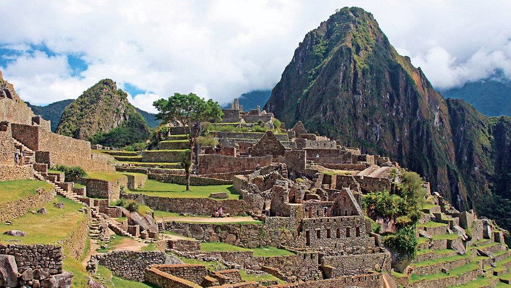

Welcome to one of the internet's websites about rocks!

The Wonders of Rocks
Rocks are everywhere, but have you ever thought much about them? This website contains some mostly false information about boulders, gems, pebbles, stones, and other types of rocks that you can find in the universe. Some types of rocks are almost interesting, and many are very dangerous, so stick around and you might learn something that could save the life of you or someone you know who spends more time around rocks than you do.
Rocks: what are they, and where can I find them?
Rocks are thought to be made of smaller rocks, although to this day scientists keep finding smaller and smaller rocks. Rocks (or stones as they are sometimes somewhat incorrectly called) are found throughout human controlled space and are thought to be found even beyond our solar system by some scientists. Rocks are mostly found on Earth, and previously Earth's moon, the Moon, although over 90% of the rocks on the Moon were removed by greedy astronauts during the Apollo missions. The sole known exception is South America, which has no native rocks whatsover. This remains a mystery to geologists and magic-users to this day.

Due to the natural lack of stones in South America, the stones used in the building of Machu Picchu by the Inca in the 15th century, and even the mountains you see in the background, all had to be imported from what is now Panama.
Rocks: what kinds are there anyways?
There are seven main types of rock (although scientists theorize there could be as many as 17!):
- Sedentary rocks: the vast majority of rocks, including moss-gathering boulders (but not rolling boulders), mountains, hills, and surprisingly most valleys.
- Ingenous rocks: the most trustworthy and least dangerous rocks, often used as starter rocks for novices
- Disingenuous rocks: the most dangerous of rocks, which include falling rocks, jagged rocks, and toxic rocks like lead and uranium.
- Metatextual rocks: are metatextual rocks are metatextual rocks are metatextual rocks are metatextual rocks are metatextual rocks are metatextual rocks are metatextual rocks are metatextual rocks are metatextual rocks are metatextual rocks are metatextual rocks are metatextual rocks.
- Driveway rocks: the most common rocks, found most often of course in their namesake, but also can be found along America's few remaining lakes and ponds and in certain gardens.
- Meteorites: the rocks that fall from the sky. Their source remains unknown to this day.
- Coal: a rock made of ancient, super-compressed plants, which in earlier, more barbaric stages of human development was used as a fuel source.

Rocks: What can I do to project myself?
Rocks can be dangerous if you don't take precautions, especially while near mountains or volcanos. Volcanos have been known to thrown rocks into the air over 20 feet high. Under the right conditions, rocks can even move, although usually this requires human input. If you are concerned it is best to stay indoors because rocks typically are not found in such an environment. So far, few uses have been found for rocks, but geologists make breakthroughs every century.